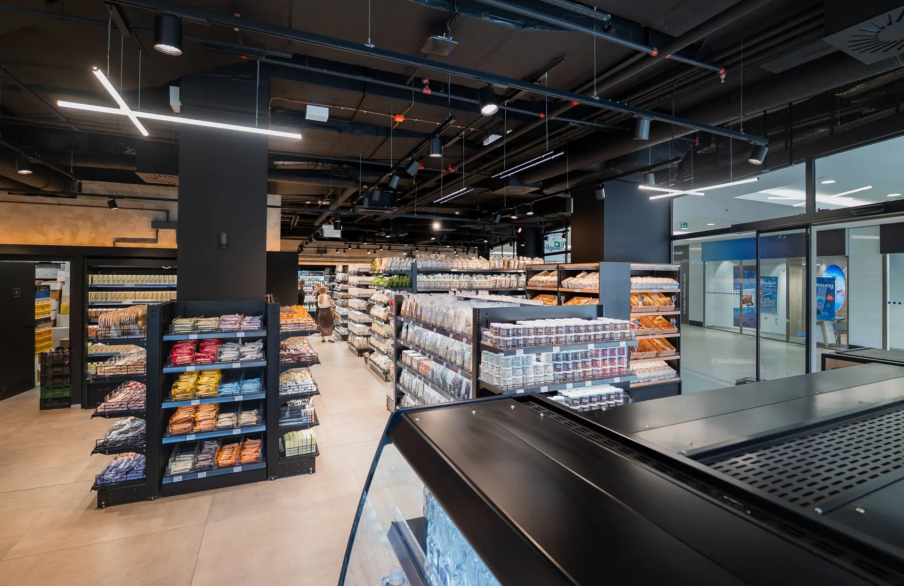
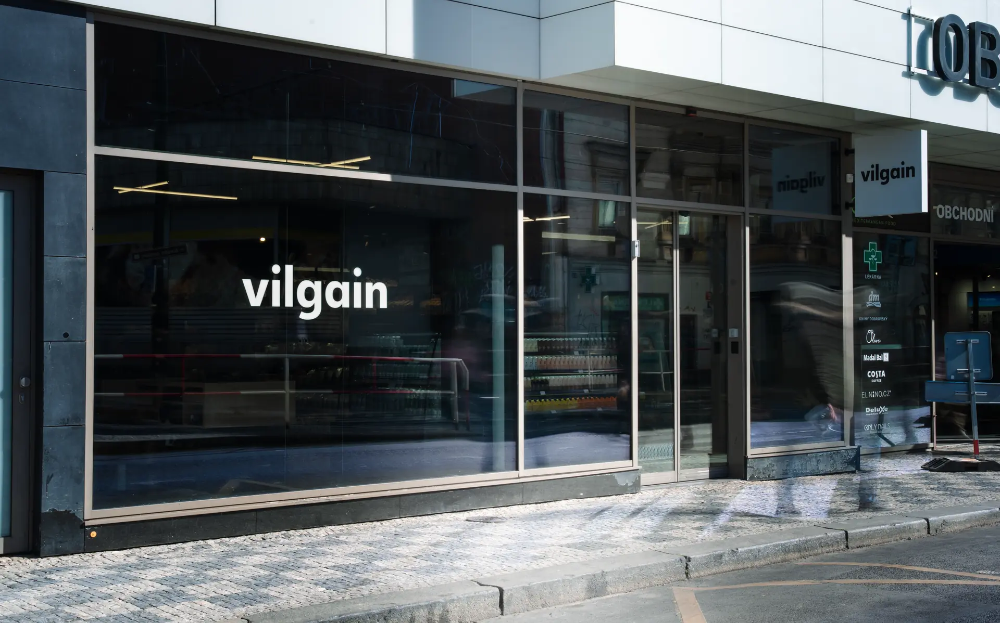

Now — Vilgain · Grab & Go
What we put
in the fridge.
Today I manage Grab & Go at Vilgain: the range in our stores, pricing, new products and what our own kitchen makes. Sandwiches, wraps and fresh food people pick up every day.
With a short shelf life, I have to look beyond taste. I pay attention to what customers buy, what gets left over and whether the category makes money.
Category management · New products · Retail · Pricing




01 / 04